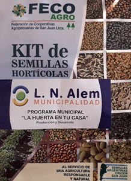

Capacitación sobre tratamiento de envases vacios de agroquímicos
Organiza: Municipalidad Leandro N. Alem

Lugar: Instalaciones del C.I.C. Vedia
20 de Noviembre de 2019
Entrega de semillas en las localidades del distrito
Organizan: Producción Alem / Inta-Vedia
Lugar: Instalaciones del C.I.C. de cada localidades.
19 de febrero de 2020
Recorrida por campos agroecológicos
Organiza: A. Signorelli Inta-Vedia

Campos de Junin y Roca
18 de diciembre de 2019